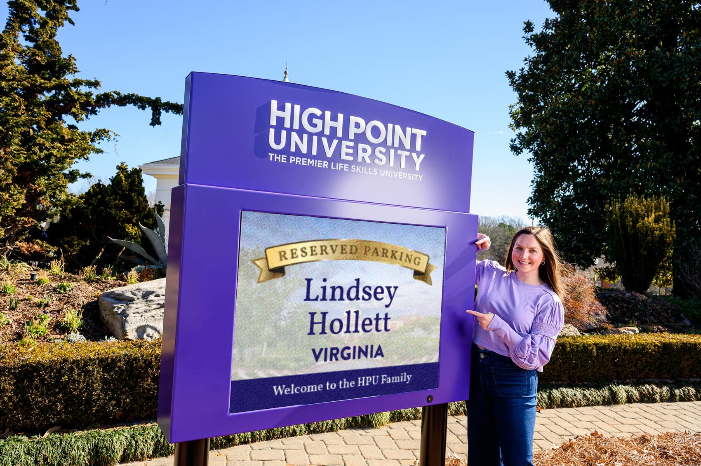
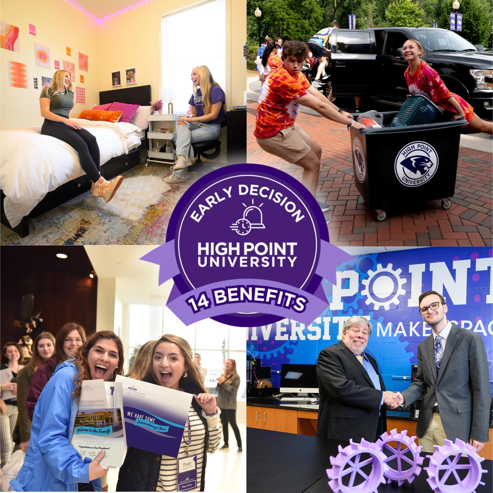

Snapshot
HPU was growing in a difficult market. Private higher education was expensive, crowded, and full of strong alternatives. Families had cheaper in-state options, established private colleges, and real questions about whether HPU's polished experience matched its academic substance.
The strategy was not just to get more attention. It was to turn attention into belief.
Growth between 2023 and 2025
More demand with more selectivity
Stronger commitment at the end of the funnel
The Strategic Read
HPU was hardest to understand from a distance and easiest to believe in person. That meant the campus visit was not just a tour. It was the product demonstration.
The work focused on the moments that moved families from curiosity to commitment: campus visits, Early Decision, counselor relationships, parent communication, social visibility, print and email touchpoints, and admitted-student experiences.
Campus Visits Made the Experience Tangible
The visit was one of HPU's strongest enrollment levers because it translated the brand from a claim into something families could actually feel. A student could see the environment, imagine daily life, meet the people, and understand why the campus experience was part of the value proposition.
We treated visit moments as conversion moments. Personal touches, strong hospitality, clear parent communication, and visible signs of belonging helped students move from "this is interesting" to "I can see myself here."

Early Decision Turned Interest Into Commitment
Early Decision helped pull commitment forward by giving interested students a clearer reason to act. The strategy was not only about a deadline. It was about attaching the decision to a more concrete set of benefits and making the choice feel rewarding, visible, and momentum-building.
The perks mattered because they gave families something tangible to connect to the decision: priority, access, recognition, and a sense that HPU was already welcoming the student into the community. That made ED feel less like paperwork and more like a first step into the experience.

What Changed
The premium campus experience was reframed as purposeful preparation, not just polish. Early Decision helped pull commitment forward. High-touch admissions relationships helped families work through cost, reputation, fit, and value.
The growth came from building a system where awareness, experience, trust, and commitment reinforced each other instead of operating as disconnected recruitment tactics.
Strategic Takeaway
HPU's growth was not about one campaign. It was about making the institution's most visible differentiator easier to understand and easier to trust.
When your biggest differentiator also creates skepticism, do not hide it. Make it make sense.